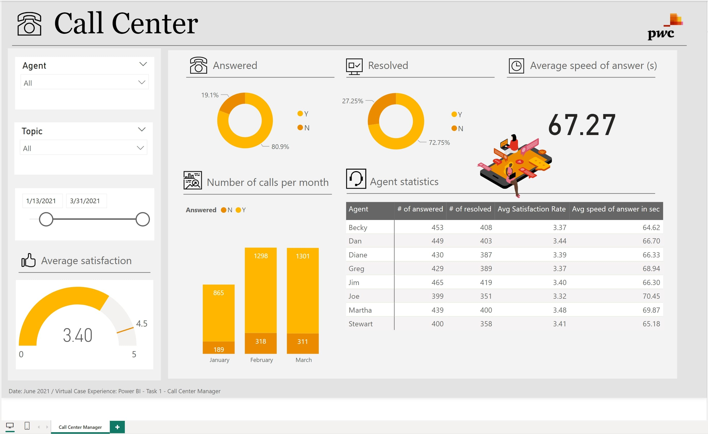

Problem Statement : Understand the target customer for the marketing team to plan a strategy successfully for the company. The Approach Used:
1) Perform some quick EDM(Exploratory Data Analysis),
2) Use KMEANS Clustering Algorithm to create our segments,
3)Use Summary Statistics on the clusters,
4)Visualize and Recommendations(conclusions),
5)Create PDF Report

In this Project I have analyzed Bike Sales Store Datasets using Python & SQL and build the real time Power BI Dashborad. The Breakdown Project Outline:
1. Load Bike Sales Store Data in Google colab,2. The data at a glance,3. Numerical analysis and visualization,4. Categorical analysis and visualization,5. Relationship between the columns?,6. Column wrangling, 7. Selection & Indexing:,8. Convert jupypter Notebook to --HTML & PDF Report,
9. Copy the colab notebook to Github.

In this project I poll cryptocurrencies prices from public API from Crypytowatch and Bitcoin website and download them as Excel files Using two important libralies such Requests (to poll data from web) and Pandas to process it.

In this project I trained and tested models that could predict the likelyhood of patients to affected by any chronic diseases such Breast Cancer,Heart attack,Parkinsons,Diabetes, and Stroke as well I achiaved the accuracy results for 92.55% and model deployed successfully to streamlit website

In this project I anlyzed datasets for hotels group and build interactives power BI website to keep tracking their income for both two hotels. Build a Visual Resort Hotels Data Story & Real-Time Dashboard Using Power BI to Present to your Partners or Stakeholders.
Breakdown Questions:
1) Is Our hotel Revenue growing by year?
2) Should we increase our parking lot size ?
3) What trends can we see in our data?
Project Pipeline :
1) Build a Database using Microsoft SQL Server Management Studio
2) Develop the SQL Query,
3) Connect Power BI to the Database
4) Visualize
5) Summarize the Findings.

This application uses the daily Coronavirus updates provided by the Rwanda's Ministry of Health and provide the summary, distribution, growth, and trends of cases in interactive way. It also provide links to some recent news gathered from the NewsApi. I am planning to add the section which shall help to predict/forecast new cases for several days ahead.
Many banks are commending their internet banking and mobile banking applications because not only they can save customers time but also they can help in coping with Coronavirus spread. I did the sentiment analysis of the users reviews of 10 different Android and iOS mobile banking applications from 10 different banks in Rwanda left on both Google Play Store and Apple Store before 2020 and after 2020 to see whether customers are leaving Negative or Positive reviews.

In this project, data from housing was cleansed using SQL queries in Microfoft Server Management Studio, and the project was broken down.
1) Set Up Server Name in your SQL Studio
2) Access your data
3) Cleaning Data depend for the specific column --> Convert The Date Format into Standardized Date Format
4) Populate The property Address Data
5) Breaking Property Address into Individual into Columns(Address,City,State)
6) Change Y and N to Yes and No in the Selected Column
7) Remove duplicate in Datasets
8) Remove Unsued Column
9) Push Your Project to Github.

Data Analyst Portfolio Project : Movie Correlation Project with Python
🗾 the primary objective of this project was to identify the corporation that exhibits the strongest correlation when comparing various factors. Specifically, our focus was on examining the relationship between movie budget and gross earnings.
➗ Through extensive analysis, including the generation of multiple correlation plots, we were able to uncover insightful findings. Notably, I observed that factors such as runtime and votes displayed the highest correlation coefficient of 0.515308. This indicates a significant positive relationship between these variables, suggesting that movies with longer runtimes and higher vote counts tend to have a stronger impact on overall gross earnings.
➖ By delving into these correlations, we gain valuable insights into the key factors influencing the financial success of movies. Such knowledge can assist stakeholders in making informed decisions regarding budget allocation and strategic planning, ultimately contributing to the overall success of the corporation.
Therefore In this project various things has been done such
🔘 1)Importing certain libraries
🔘 2)Dealing with Columns has Missing Data
🔘 3)Check Data types for Each column
🔘 4)Change Column Datatype
💠5)Creating Correct_year Column match with Released Date
💠6)Sorting Gross Column by ascending
💠7)Displaying all Column at Once
💠8)Drop Duplicates column
💠9)Scotter plot between Gross and Budget
💡 10)Plot Budget VS Gross using Seaborn
💡 11)Correlation
💡 12)Converting all Columns in Numerical

Here's a step-by-step outline project process for how I scraped product data from Amazon using Python:
1. Install Required Libraries:
- Install the necessary libraries: `selenium`, `beautifulsoup4`, and `webdriver_manager`.
2. Set Up WebDriver:
- Import the required modules: `webdriver` from Selenium and `webdriver_manager` for managing the WebDriver.
- Set up the WebDriver using `webdriver.Chrome()` or the appropriate driver for your browser.
- Optionally, configure the WebDriver options (e.g., headless mode, proxy settings).
3. Navigate to the Product Page:
- Use the WebDriver's `get()` method to navigate to the product page URL on Amazon.
4. Extract the Page Source:
- Retrieve the page source using `driver.page_source` and store it in a variable.
5. Close the WebDriver:
- Close the WebDriver using `driver.quit()` to free system resources.
6. Parse the HTML:
- Import `BeautifulSoup` from the `bs4` library.
- Create a `BeautifulSoup` object by passing the page source and the parser (e.g., "html.parser") to it.
7. Find and Extract Product Information:
- Inspect the HTML structure of the product page to identify the relevant elements.
- Use BeautifulSoup's methods to find and extract the desired information (e.g., product title, price) from the parsed HTML.
8. Process and Store the Data:
- Process the extracted data as needed (e.g., remove unwanted characters, convert to appropriate data types).
- Store the data in a suitable data structure (e.g., variables, lists, dictionaries) for further processing or analysis.
9. Save the Data:
- Use the `csv` module or other appropriate methods to save the extracted data to a file (e.g., CSV, Excel, database).

The following questions were addressed for Sales Company, which sells electronics products in the United States, using Pandas in Project Jupyter.
Using Pandas, the List of Questions Business had was resolved.
📉 1).What was the Best a Month for Sales? How much was earned in that Month
📊 2).What a city has the highest number of sales
📉 3).What products are most often sold together
📈 4).What time should we advertizements products to maximize the likelyhood of customers to buying products ?
📈 5).What are product are sold ? and why it sold most¶

This dashboard demonstrates how we used two datasets for IBM employees to illustrate how various factors affect why employees leave the firm. For this project, you can access my public Tableau on button below:

This dashboard demonstrates how we used two datasets for Sprocket Central Pty Ltd to illustrate how various factors affect Their firm. For this project, This project composed by three main task
Task 1: DATA QUALITY ASSESSMENT:Document assumptions, limitations and exclusions for the data; as well as how you would further improve in the next stage if there was additional time to address assumptions and remove limitations.
Task 2: MODEL DEVELOPMENT:Determine a hypothesis related to the business question that can be answered with the data. Perform statistical testing to determine if the hypothesis is valid or not
Task 3: INTEPRETATION AND REPORTING:Visualisation and presentation of findings. This may involve interpreting thesignificant variables and co-efficient from a business perspective.

Power BI Use of Visulization analytics tools to help the telecom company get to know and understand their customers better much better. when your business is highly competative
primarily Audio no matter how you tuned in you're its difficult to see what really going on. preparing dashboard visualize the strength the center manager, telecom company
has been losing customers and we need to keep them again.Apply Power BI skills could help for Human Resource (HR) to understand clearly and to-knoow-how.
Create a dashboard in Power BI for Claire that reflects all relevant Key Performance Indicators (KPIs) and metrics in the telecom dataset.
Possible KPIs include (to get you started, but not limited to):
😍 Overall customer satisfaction
😗 Overall calls answered/abandoned
🕔 Calls by time
🕓 Average speed of answer
Agent’s performance quadrant -> average handle time (talk duration) vs calls answered

Define proper KPIs
Create a dashboard for the retention manager reflecting the KPIs
Write a short email to him (the engagement partner) explaining your findings, and include suggestions as to what needs to be changed
Possible KPIs include (to get you started, but not limited to):
1) Customers in the telecom industry are hard-earned: They don’t want to lose them.
2) The retention department is here to get customers back in case of termination.
3) Currently, They get in touch after they have terminated the contract, but this is reactionary: it would be better to know in advance who is at risk.
4) They have done customer analysis with Excel: it has always ended in a dead-end.
5) They would like to know more about our customers: visualised clearly so that it’s self-explanatory for our management.
6) The Retentions Manager has provided some information in the resources to you.